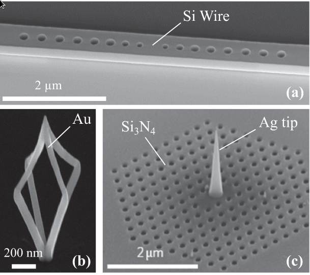
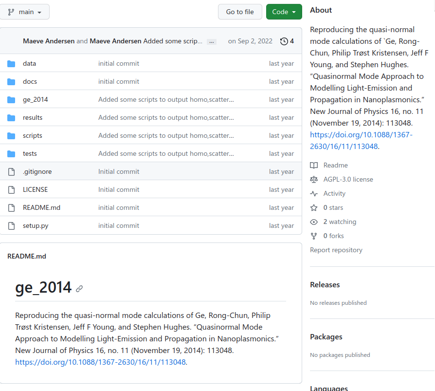
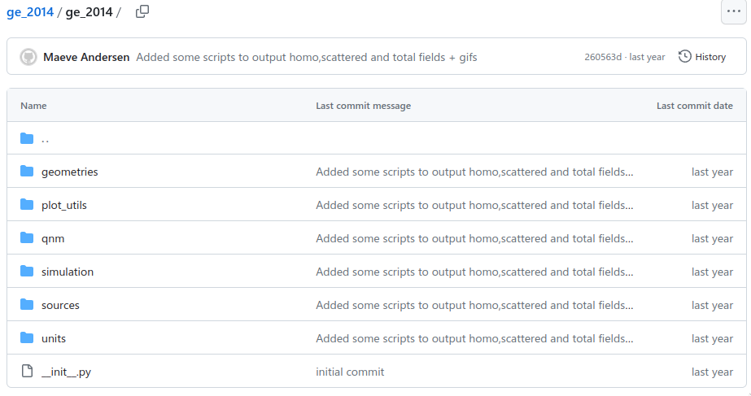

Struggles in Science
Mae Andersen (she/her)
Tue Sep 26 2023
About Me
- 27 years old
- trans femminine
- genderf*ck
- 5th year grad student
- currently rebuilding my life (2 yrs post transition)
- has a cat
- has 3 girl friends
Trigger warning
This talk also tells my “story” which is not pretty. It may be triggering for some of you in the audience. The door is open, please let yourself out at anytime.
trigger warning for drug abuse, discussion of harassment, suicide/suicidal ideation, and generally uncomfortable topics
A bit more about me
- I am neurodivergent
- I struggle from prescription drug abuse
- I am girlfriends with someone who is homeless
- I have people in my circle of connections who have literally nothing and could die tomorrow
- Since transitioning, I’ve experienced verbal harrasment in public about once every few months
- My main community consists of trans, non-binary, and intersex folk
Vibes of initially coming out as a grad student
I just remember feeling like everyday was the most embarrassing day of my life for months on end. Not just that, but while walking to the university or even just gardening (on campus grounds), I was given the middle finger, had someone yell about cutting dicks off and then running away, someone yelled when they saw me “it’s a man!”, and someone also agressively told me “fuck you” and proceeded to give me the middle finger at a bus stop. I cried. A lot. For most of those. Except the last one, where I smiled at the woman and gave her the middle finger in return, but I’m not sure that was a “good” outcome even.
Day in my life
right after coming out
- sleep for 24 hours
- wakeup at 4 pm
- take my anti depressants & Adderall
- go into office at 6pm
- take a second dose of Adderall
- get lost in weird but fun math
- make coffee, walk around
- feel pretty + smart
- stay up all night doing homework
right after coming out cont.
- at 4am say hello to custodial staff
- folks in the office come in at around 9am or 10am
- take more Adderall
- go to class all loopy during the afternoon
- go home after class and try to do more homework
- feeling out of control, so consume THC
- lay in bed unable to move
- regardless, still obsessed with quantum electrodynamics
- wonder if there are nice packages to formalize my code
- pass out
over a year after coming out
At this point I was spending a few weeks in Utah to live with my ex-girlfriend (at the time girlfriend) and her girlfriend (my metamore). My ex-gf was holding my meds for me. I also met one of my current girlfriends there who crashed on our couch as she was without a home or stable place to stay.
over a year after coming out
- wakeup
- ask ex-gf for one of my Vyvance (ADHD med)
- do housewife stuff (clean kitchen, cook breakfast)
- talk to my ex-gf about philosophy
- grade
- play games
- grade
over a year after coming out cont.
- snuggle with stuffies
- my gf comes over
- I ask ex-gf for another Vyvance
- I snuggle with my gf in the littles room
- I grade more
- everyone plays magic
- bedtime
Research experience after coming out
Research was irregular and often not productive. I eventually just had to stop the project and leave my research group.
Life today
I am two years on hormone replacement therapy and am starting to feel comfortablin my own skin. I am starting to open up to others again. That being said, I am a minority and I struggle with that along facial dysphoria.
jargon
dysphoriafor me is a mismatch between how my body looks and how I perceive myselffacial dysphoriafor me means that I want my brow bone reshaped to be more flat among other things
Introducing Optical Resonators
What is an Optical Resonator?
An optical resonator is characterized by its resonant modes.
Jargon: Resonant Modes
resonant: Something that continues to ring or “sing”mode: Any distict pattern or vibration in a physical system
Question: Do you know any examples of resonators? Discuss with your neighbor
Hint: resonators don’t have to be optical
Examples of resonators
- Guitars!

- Quartz!


Revisit: What is an Optical Resonator?
An optical resonator is an object that when interacting with light, will continue ring or “sing” with light. You will notice that this “singing” only occures for distinct patterns or vibrations of light.
Idea #1 of Optical Resonators
Has
resonant modeswhich get excited due to incoming light.

Illustration of an accoustic resonant mode
The accoustic resonator is knocked by the palm of a hand (t = 0).
refs:[@Lalanne2018]
Illustration of an accoustic resonant mode
 https://en.wikipedia.org/wiki/Helmholtz_resonance#/media/File:Helmholtz_resonator.jpg
https://en.wikipedia.org/wiki/Helmholtz_resonance#/media/File:Helmholtz_resonator.jpg
The accoustic resonator is knocked by the palm of a hand (t = 0).
- initially, the accoustic signal is very complex
- for t > 0.1, the
accoustic signal:
- oscillates at the resonant frequency
- gradually decays in time
refs:[@Lalanne2018]
Question: What controlls the rate of decay for cavities? Discuss with your neighbor
Idea #2 of Optical Resonators
A
resonant mode’s energy decays after it gets excited (some decay really fast while others take a while).
Idea #3 of Optical Resonators
Looking at the resonator signal after “long enough” is a way to look at the resonant mode’s frequency!
Question: Can Resonators (Optical or Accoustic) have multiple resonant modes? Discuss w/ your neighbor
Resonators Come in All Shapes, Sizes, and Materials
- Optical resonators are actually very diverse!
(a)just patterns of holes(b)it looks like a cage?(c)it is a tip in the middle of holes 
refs:[@Lalanne2018]
How I did research in computing optical modes
Step one: try to reproduce some papers
I worked on reproducing the quasi-normal mode calculations of Ge, Rong-Chun, Philip Trøst Kristensen, Jeff F Young, and Stephen Hughes. “Quasinormal Mode Approach to Modelling Light-Emission and Propagation in Nanoplasmonics.” New Journal of Physics 16, no. 11 (November 19, 2014): 113048. https://doi.org/10.1088/1367-2630/16/11/113048.
Make a github repo!

Jargon, what’s github?
Github is a place to store git repos
Jargon, what’s a git repo?
A git repo is a “version control system”, meaning that it keeps track of your files and allows you to keep track of file history as well! A git repo allows you to “go back in time” to previous versions of your project!
Project Layout
I reccomend Patrick Mineault’s The Good Research Code
Handbook: https://goodresearch.dev/
My Layout
Scientific code projects have a lot more than just code. Here is how I organized things.
resultsI stuck my results here. things to show an advisor or put in a talk (meta)ge_2014This folder has the code that should reflect key ideas of the paperscriptsAuxillary code and commands to generate plots, data, etc..docsPut descriptions of your code and project in here
ge_2014

EPILEPSY WARNING
The following slides contain flashing colors!
Results of light hitting a metal rod

Results of the same sim, but no metal rod
Results of the light hitting metal rod MINUS the no metal rod sim

Closing Remarks
Make good experiences in stem!!!
My entire social life changed, and that was hard
When I came out, my social identity changed non-adiabatically. I had to build a new social life as a new person. It was one of the hardest things I’ve ever done.
I accumulated a lot of stress from wearing dresses and makeup out in public
At age 24, I felt really really **really* awkward trying to be myself
Refs
- quartz
oscillator image
https://en.wikipedia.org/wiki/Crystal_oscillator#/media/File:Quartz_crystal_internal.jpg - guitar
image
https://en.wikipedia.org/wiki/Guitar#/media/File:GuitareClassique5.png
{kind=link}
{kind=link}